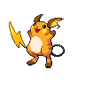
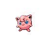
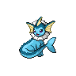

Это две разные композиции: игровое пространство-карта и редакционный каталог наблюдений. Переключай одинаковые экраны, чтобы сравнить структуру. Цифры демонстрационные.
01 · Ночной заповедник
Питомец живёт в пространстве карты; цвет ведёт к действиям.
MAP
PokéCorner— □ ×
02 · Ночной полевой журнал
Питомец как запись; каталог и история в редакционной сетке.
FIELD NOTES
PokéCorner— □ ×
Заповедник строится как игровая сцена с habitat-зоной. Журнал переставляет приоритеты: сначала карточка вида, затем каталог; покупки и поимки выглядят как записи.
Твой уголокЗОНА 01
Мой покемонPokédex
АКТИВНЫЙ ПИТОМЕЦ
ПикачуЭЛЕКТРИЧЕСКИЙ
До поимки 82%
До эволюции 38%
Очки заботы 24 CP
Лакомства 03
Каталог видовПОИСК · ФИЛЬТРЫ
Мой покемонPokédexВсеМои
ВСЕ ИЗБРАННОЕ · ПО ТИПУ
001
004
007
025
026

037
039

052
133
134

151
ЯЙЦА · 2 В ИНКУБАЦИИВЫЛУПИТЬ →
ВстречиЛОВЛЯ · 2 / 3
ДО СЛЕДУЮЩЕЙ ВСТРЕЧИ · 82%
Активность копит встречи. Можно хранить до трёх.
ПОСЛЕДНИЕ ПОИМКИ
Пикачу № 025
Иви № 133
Яйцо в коллекции
МагазинЗА АКТИВНОСТЬ
PКОШЕЛЁК 1 240 монет · до следующей +60
ПРЕДМЕТЫ
Лакомства ×5 120 P
Очки заботы 240 P
Амулет ловли 300 P
ЯЙЦА · 1 ЧАС
Обычное 100 P
Необычное 250 P
Редкое 500 P
Легендарное 900 P
НастройкиЭТОТ КОМПЬЮТЕР
УХОД · АКТИВНОСТЬ
Режим Chill⌄
Super Hardcore ○
Считается количество кликов и нажатий, но не содержимое.